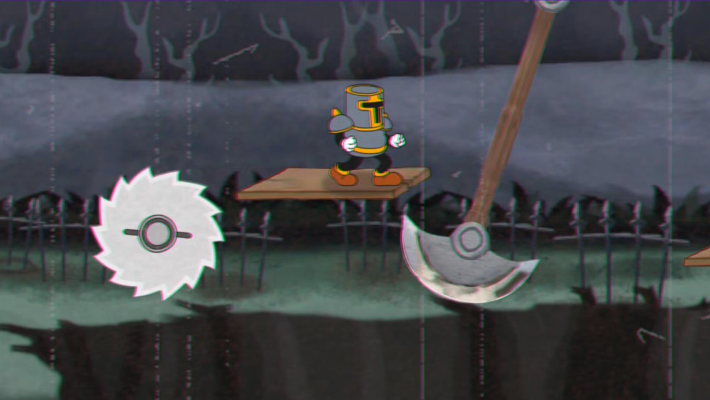

Desenvolvedor Solo anuncia jogo Triple A
Por
Gustavo Almeida •
Um novo projeto independente tem chamado atenção da comunidade gamer por sua ambição incomum. Desenvolvido por apenas uma pessoa, o jogo — ainda em desenvolvimento — promete ter escopo e qualidade visual comparáveis a produções de estúdios muito maiores. Mesmo sem o financiamento típico de grandes empresas, o projeto impressiona pelo cuidado artístico e pela proposta ousada de unir estilos aparentemente opostos.
O grande destaque do jogo está em sua estética inspirada nos desenhos animados americanos da década de 1930, período conhecido como a “Golden Age” da animação. Personagens com traços elásticos, animações exageradas e expressões caricatas contrastam com um cenário medieval sombrio, onde o protagonista, um cavaleiro solitário, atravessa um mundo tomado por corrupção e criaturas grotescas. O resultado cria uma identidade visual única, que lembra animações clássicas ao mesmo tempo em que constrói uma atmosfera pesada e melancólica.

Apesar de ser um plataformer, o jogo aposta em uma dificuldade extremamente elevada, inspirada na filosofia de design de títulos conhecidos por desafiar a paciência e habilidade dos jogadores. Cada inimigo exige atenção, cada salto precisa ser preciso e cada área parece esconder perigos inesperados. A combinação entre jogabilidade exigente e direção artística carismática tem gerado muitos elogios nas primeiras demonstrações divulgadas pelo desenvolvedor.
Mesmo ainda em estágio de desenvolvimento, o projeto já conquistou uma pequena, porém entusiasmada comunidade online. Muitos jogadores destacam que raramente se vê um trabalho solo com um nível tão alto de ambição, criatividade e identidade própria. Se conseguir cumprir tudo o que promete, o jogo pode se tornar um exemplo marcante de como projetos independentes ainda são capazes de surpreender a indústria.